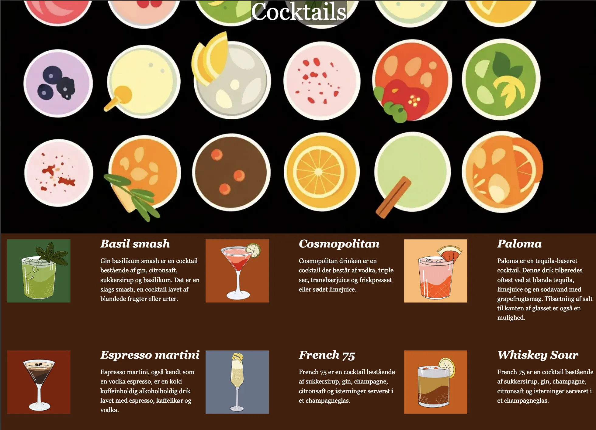

T03 - UX/UI
MMD FORÅR 2026Løsning
I dette tema udviklede jeg en hjemmeside om cocktails. Projektet omfattede både research, design og udvikling af et færdigt website. Målet var at skabe en brugervenlig og visuelt sammenhængende oplevelse for målgruppen. Jeg designede og illustreret billeder selv, da der skulle være ophavsrettigheder.
Se projektet her ↓
MIT PROJEKT
Proces
Jeg arbejdede med UX-metoder som målgruppeanalyse og research. Derefter udviklede jeg wireframes, style tiles og prototyper i Figma, inden designet blev omsat til kode. Processen hjalp mig med at planlægge og teste løsninger tidligt i projektet.
Reflektion
I dette tema fik jeg for første gang indsigt i den designproces, der ligger bag udviklingen af digitale produkter. Gennem arbejdet med mit cocktailsite lærte jeg, at et godt design kræver mere end blot flotte farver og grafik. Jeg blev introduceret til research, målgrupper, wireframes, style tiles og prototyper, som alle er vigtige værktøjer i udviklingen af en brugervenlig løsning. Arbejdet i Figma gjorde det muligt at visualisere idéer tidligt i processen og teste forskellige løsninger, før de blev kodet. Jeg lærte at tænke mere struktureret omkring designbeslutninger og blev mere bevidst om, hvordan visuelle valg påvirker brugerens oplevelse. Temaet styrkede min forståelse for samspillet mellem design og funktionalitet.